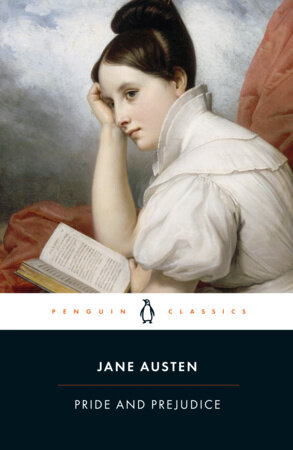
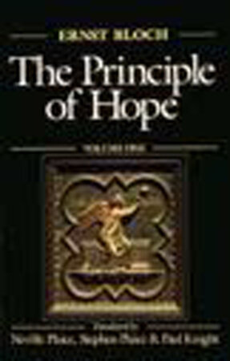
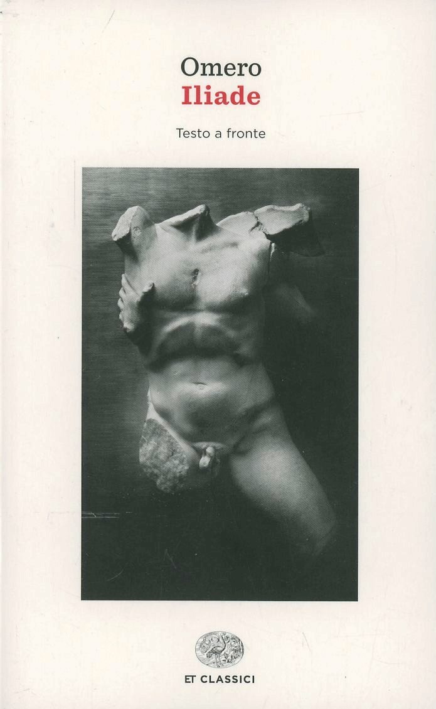

52:31 · 10 OPERE
Il punto zero: studenti non più capaci di leggere.
Il filo del discorso
Il contributo parte da un articolo di Rose Horowitch sulle difficoltà di lettura nei college statunitensi e lo usa per interrogare gli scopi della formazione. Il relatore considera insufficiente attribuire il problema agli smartphone: propone di leggerne l’uso anche come sintomo di insoddisfazione e di un rapporto impoverito con il mondo. Difende quindi la lettura come incontro con altre esperienze,esercizio di attenzione e educazione del sentire. Il percorso attraversa Dostoevskij,Austen,Allan Bloom,la propria critica del sistema universitario e alcuni esempi di comunicazione televisiva,con il richiamo a Eco e Bloch. La conclusione rivendica una scuola capace di sostenere la complessità invece di ridurre ogni discorso a frammenti. La scheda mantiene questa domanda educativa distinguendola dalle generalizzazioni del relatore. Una difficoltà nel sostenere letture lunghe non equivale automaticamente ad analfabetismo; il valore di un testo non dipende dal solo numero di pagine e leggere una traduzione è una attività legittima,diversa dallo studio filologico dell’originale. I giudizi sugli atenei,sugli studenti e sui conflitti contemporanei sono attribuiti,senza estendere responsabilità individuali a intere comunità. Alcuni riferimenti fattuali vengono precisati,tra cui i riconoscimenti accademici di Greta Thunberg e il format televisivo ricordato.
I libri nel discorso

The Elite College Students Who Can’t Read Books
Illustrazione originale dell’articolo,di Masha Krasnova-Shabaeva: The Atlantic,online1ottobre2024,fascicolo novembre2024. Illustrazione originale di Masha Krasnova-Shabaeva associata all’articolo,non copertina di un libro.
Studenti fra grandi libri rossi,corrispondenti alla immagine del pezzo. Provenienza e credito riscontrati sulla pagina originale; nessun titolo o autore aggiunto sopra la illustrazione.
The Atlantic,autrice e titolo dell’articolo espliciti.
Passaggio 0:11 ↗ · Fonti e libro ↗
Delitto e castigo
Copertina: BUR · introduzione di Clara Strada Janovic, edizione di riferimento 1983
Immagine autentica dell’opera, controllata visivamente; l’edizione di riferimento non è attribuita al filmato.
Delitto e castigo e Raskol’nikov espliciti nell’esempio sulla lettura e nella successiva discussione.
Passaggio 8:47 ↗ · Fonti e libro ↗
Orgoglio e pregiudizio (Pride and Prejudice)
Copertina: Penguin Classics,31dicembre2002,paperback,448pagine,ISBN9780141439518,a cura di Vivien Jones,con introduzione di Tony Tanner. Prima pubblicazione del romanzo1813. Immagine della edizione paperback specifica,non della hardcover9780141040349 suggerita dalla immagine social generale della pagina.
Immagine autentica dell’opera, controllata visivamente; l’edizione di riferimento non è attribuita al filmato.
Pride and Prejudice,Jane Austen e titolo italiano espliciti.
Passaggio 18:40 ↗ · Fonti e libro ↗
La società del contrario
Copertina: Zambon · 2005
Copertina autentica dell’edizione di riferimento, controllata visivamente. Non identifica l’esemplare letto o citato nel video.
La società del contrario esplicito come libro del relatore.
Passaggio 13:17 ↗ · Fonti e libro ↗
The Empty Campus
Copertina: Lulu · edizione inglese di riferimento
Immagine associata all’ISBN di riferimento e controllata visivamente; edizione e traduzione non identificate come quelle citate o lette nel video.
The Empty Campus esplicito,normalizzato dalla ASR.
Passaggio 28:19 ↗ · Fonti e libro ↗
The Closing of the American Mind
Copertina: Simon & Schuster · edizione del venticinquennale · 2012 · testo inglese
Copertina autentica dell’edizione di riferimento, controllata visivamente. Non identifica l’esemplare letto o citato nel video.
Allan Bloom e The Closing of the American Mind espliciti,distinto da Harold Bloom.
Passaggio 31:42 ↗ · Fonti e libro ↗
Fenomenologia di Mike Bongiorno
Copertina della raccolta Diario minimo che contiene il saggio: Copertina della raccolta Diario minimo,Bompiani,ISBN9788845274886; catalogo Giunti:12marzo2001,160pagine. Il record Braidense descrive la18a edizione2013 con153pagine. Si dichiara la divergenza fra catalogazioni e ristampe; la copertina è quella attualmente associata al titolo dall’editore. La raccolta uscì nel1963.
Fenomenologia di Mike Bongiorno è un breve saggio della raccolta,non un autonomo libro su Bongiorno. L’ISBN e la copertina sono della raccolta.
Eco e titolo del saggio espliciti.
Passaggio 34:11 ↗ · Fonti e libro ↗
Odissea
Copertina: Einaudi · ET Classici · 2014
Copertina autentica controllata visivamente. Edizione di riferimento, non identificata come quella usata nel video.
Odissea e Omero espliciti nel commento sul materiale didattico.
Passaggio 41:35 ↗ · Fonti e libro ↗
Il principio speranza (Das Prinzip Hoffnung)
Copertina del volume1 della traduzione inglese: The Principle of Hope,Volume1,MIT Press,paperback,26maggio1995,528pagine,ISBN9780262521994; traduzione Neville Plaice,Stephen Plaice e Paul Knight. L’opera inglese è in tre volumi; questa immagine riguarda soltanto il primo,non una edizione completa in volume unico.
Immagine autentica del catalogo del distributore,in bassa definizione. Il titolo e la indicazione VolumeOne sono stati riscontrati. L’ISBN appartiene al primo volume inglese,non a tutta la opera e non a una edizione italiana.
Bloch e Il principio speranza espliciti; nessuna lezione precisa acquisita.
Passaggio 42:26 ↗ · Fonti e libro ↗
Iliade
Copertina: Einaudi · ET Classici · 2014
Copertina autentica dell’edizione di riferimento, controllata visivamente. Non identifica l’esemplare letto o citato nel video.
Iliade esplicita nel commento sulla docente e sulle traduzioni.
Passaggio 47:03 ↗ · Fonti e libro ↗